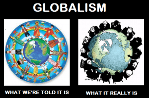

< < < Back
The Dysfunction Of Modern Society Is Proof That Cultural Marxism “Works” – Return Of Kings
The social and political climate took a very sharp left turn during the mid-1960s, seemingly overnight. By the 1990s, political correctness began stifling free speech. Today, urban riots are back in style. California still had a conservative majority in the early 1980s, but today there’s serious talk of secession since the last Presidential election. Why did things change so much?
This cultural revolution wasn’t a spontaneous trend occurring from the normal ebb and flow of politics. The Frankfurt School started cultural Marxism; better known to the public today as progressivism. They were a think tank of Marxist professors and top-level psychologists, with significant inspiration from Communist theoreticians Antonio Gramsci and Gyorgy Lukacs. They wanted to wreck the foundations of traditional societies (the USA in particular) that made them strong; weakening social ties to make them ripe for Communist takeover. Their students became professors, educating the young Baby Boomers in the 1960s and creating the Counterculture. Today, the aging Boomers are holding the levers of power.
Today, progressivism—“Communism Lite”—is the leading ideology among Washington careerists, the media, academia, and ultra-wealthy managerial elites. Whether or not it’s really progress is an evocative question. Still, ultimately this ideology is inherently dysfunctional. The only more dysfunctional thing imaginable would be a brigade of Californian hipsters attempting a second Pickett’s Charge.
The 1960s political buffet

Man, I wouldn’t believe half this stuff if I wasn’t stoned all the time, dig?
This multifaceted strategy became several movements:
- Second-wave feminism was sold as equality. It was really about abortion, wrecking families, and driving a wedge between women and men.
- The LGBT movement was sold as respecting personal lifestyle choices. That was a blow to traditional morality.
- Minority identity politics was sold as civil rights. The reality wasn’t always quite so lofty, and the result was inflaming grievances. Another result was promoting guilt trips, and expressions of majority identity politics got shrill condemnation.
-
Mass immigration was sold as multiculturalism. This was a long-term population replacement strategy.
- Secularism was sold as religious neutrality. The result was diminished respect for this part of tradition, as well as later attempts (such as Atheism+) to push the SJW agenda. In practice, some religions are exempt from criticism.
- The sexual revolution was sold as liberation (“if it feels good, do it”). This other blow to morality unleashed a Pandora’s Box of social ills: single motherhood becoming normalized, runaway welfare (a sociopolitical battering ram), and the deregulation of the sexual marketplace.
These viewpoints did exist in far more moderate forms previously, and every society does have its tensions. However, things were much more peaceful before all the demagoguery kicked into high gear during the crazy “kill your parents” 1960s. Society’s acquiescence to their initial demands didn’t placate them; it emboldened them, and they kept turning up the heat. By the 1990s, these movements had become politically correct orthodoxies. Questioning their premises openly could get you ridiculed, shouted down, or even targeted for a witch hunt.
Lately, the results have been far in excess of what the Frankfurt School ever imagined. Today’s generation of cultural Marxists have developed elaborate rationalizations: privilege rhetoric, microaggression, “the personal is political”, etc. Lately, the push is to erase all meaningful social distinctions:
- Women are encouraged to be unladylike (making them unattractive); men are encouraged to be wimps (which ruins the social life of anyone who believes that)
- The differences between the sexes are being blurred, which is picking up speed with the transsexuality fad
- Not only are meaningful distinctions between diverse population groups denied, there’s been a long-term effort to dissolve humanity into a biological stir-fry, which would destroy diversity in the name of diversity
Individuals differ by biology and personal choices, so differences in outcomes are inevitable. Thus, their quest to make everyone the same is impossible, but they’re doing a lot of damage in the attempt. Other than that, there’s a general hostility toward any sorts of standards. Effectively, this has turned society on its head. Abnormal is the new normal. Fair is foul and foul is fair. Still, it gets worse yet.
Suicidalism
The article “Gramscian Damage” (worth a read in its entirety) further describes some items promoted by other pointy-headed leftist intellectuals. For starters:
[I]n the 1930s members of CPUSA (the Communist Party of the USA) got instructions from Moscow to promote non-representational art so that the US’s public spaces would become arid and ugly.
Americans hearing that last one tend to laugh. But the Soviets, following the lead of Marxist theoreticians like Antonio Gramsci, took very seriously the idea that by blighting the U.S.’s intellectual and esthetic life, they could sap Americans’ will to resist Communist ideology and an eventual Communist takeover. The explicit goal was to erode the confidence of America’s ruling class and create an ideological vacuum to be filled by Marxism-Leninism.
What’s truly remarkable is that the CIA got promoted this too (along with feminism); how brilliant! And then, a damning bill of particulars:
- There is no truth, only competing agendas.
- All Western (and especially American) claims to moral superiority over Communism/Fascism/Islam are vitiated by the West’s history of racism and colonialism.
- There are no objective standards by which we may judge one culture to be better than another. Anyone who claims that there are such standards is an evil oppressor.
- The prosperity of the West is built on ruthless exploitation of the Third World; therefore Westerners actually deserve to be impoverished and miserable.
- Crime is the fault of society, not the individual criminal. Poor criminals are entitled to what they take. Submitting to criminal predation is more virtuous than resisting it.
- The poor are victims. Criminals are victims. And only victims are virtuous. Therefore only the poor and criminals are virtuous. (Rich people can borrow some virtue by identifying with poor people and criminals.)
- For a virtuous person, violence and war are never justified. It is always better to be a victim than to fight, or even to defend oneself. But ‘oppressed’ people are allowed to use violence anyway; they are merely reflecting the evil of their oppressors.
- When confronted with terror, the only moral course for a Westerner is to apologize for past sins, understand the terrorist’s point of view, and make concessions.
These memes have far-reaching effects. Naive pacifism is an obvious one. (In fact, Herbert Marcuse of the Frankfurt School came up with the slogan “Make love, not war”.) Suicidalism also inspired the liberal 1960s-1970s “soft on crime” approach which backfired badly and took far too long to start fixing. Gun control is another obvious one, a dead horse the left still hasn’t abandoned. (Light sentences along with a disarmed public—what were they thinking?) This victim mentality is even why Social Justice Warriors brag about their mental problems to one-up each other about who is “least privileged”. The article continues:
As I previously observed, if you trace any of these back far enough, you’ll find a Stalinist intellectual at the bottom. (The last two items on the list, for example, came to us courtesy of Frantz Fanon. The fourth item is the Baran-Wallerstein “world system” thesis.) Most were staples of Soviet propaganda at the same time they were being promoted by “progressives” (read: Marxists and the dupes of Marxists) within the Western intelligentsia.
I might add that the first item is heavily promoted by postmodernism and deconstructionism, big fads in academia. (Plato shot that down already; see Gorgias or the Republic.) Later:
[M]ost of us no longer think of these memes as Communist propaganda. It takes a significant amount of digging and rethinking and remembering… to realize that there was a time… when all of these ideas would have seemed alien, absurd, and repulsive to most people—at best, the beliefs of a nutty left-wing fringe, and at worst instruments of deliberate subversion intended to destroy the American way of life.
And that’s exactly what they were. The article also describes the KGB’s “active measures” campaign, disinformation as well as useful idiots spreading their propaganda. This is what KGB insider Yuri Bezmenov called ideological subversion.
Constructive or destructive?

I have to give credit where it’s due.
Note well, the Soviet version of feminism was a token effort compared to ours. They left out the part about turning women against men, or trying to make people unisex. The USSR had a very diverse population, but promoted unity, and certainly didn’t tolerate agitation against the Russian majority. Gay rights didn’t exist; they got put in mental institutions. (Leftists today conveniently forget this, along with many other items of the USSR’s less than stellar human rights record.) They were officially atheist, though largely co-opted the Russian Orthodox Church rather than stamping it out. The USSR exported revolution to impoverished nations, but didn’t welcome in tens of millions them. They were prudish, rather than libertine. Although they spoke of pacifism, they didn’t practice what they preached.
All the same was generally true for other Warsaw Pact nations. Also note well, Communist countries promoted high culture and didn’t dumb down their educational system. Despite a token fuzzy internationalism, they promoted national pride, rather than guilt trips. They weren’t soft on crime, to say the least.
Although they (and especially their sympathizers abroad in education and the media) were pushing cultural Marxism in the USA and other NATO countries, the Soviets weren’t implementing that stuff themselves! Anyone there who proposed any of that would’ve been in serious trouble for deviationism. The reason is simple; “Communism Lite” was the “for export” version, meant to subvert Western countries and pave the way for the real deal.
So this is why progressivism is dysfunctional: it was designed that way. It wasn’t about addressing inequities in society; they keep moving the goalposts as soon as their demands are met, now well beyond the point of absurdity. It wasn’t about peace and love, but rather agitation. It wasn’t even about social justice. It was all about ripping society apart at the seams to make the public angry and discontented. To put it bluntly, they wanted to make society suck as much as possible, to stir up revolutionary ferment. The ultimate goal was totalitarian power and control. Actually, it still is, but who benefits now?
Cultural Marxism deconstructed itself

One might ask: if the USSR is gone, why does cultural Marxism still exist? By the 1990s, a strange event had happened: mutual subversion. Russia ended up with a dysfunctional form of capitalism, while “Communism Lite” became the Western world’s ruling ideology. The remaining Frankfurt School members were elderly and no longer at the forefront, but those they influenced had made Gramsci’s “long march through the institutions.” It’s like one of those Star Trek plots where a powerful robot carries out orders it doesn’t understand issued by its long-dead builder.
Cultural Marxism became a decentralized memeplex, spread by the media. Even those unenthusiastic about it wouldn’t threaten their livelihoods by going against the grain. Educational bureaucrats are also deep in it, like ticks on a shaggy dog. “Inside the Beltway” politicians have taken it up wholeheartedly, even co-opting establishment Republicans into a controlled opposition. For all these types, it’s their bread and butter.
Then there’s a hive of professional activists and others implementing cultural Marxism, memebots still on orders from dead Soviet dictators. This includes foundation heads and staffers, community agitators, civil rights lawyers, petty bureaucrats, advertisers using their company’s money to push sneaky social messages, diversity consultants hired by your HR department, and so forth. Social Justice Warriors are at the bottom of the barrel.
Some activists are genuine idealists believing they’re saving the world. Others profiteer from it. Regardless, all think they’re fighting the Establishment, not realizing they’re part of it. These tools are exploited by those at the top, and they’d all be in for a big surprise if Communism ever emerged.
Other than that, champagne socialists enthusiastically support cultural Marxism. They live like kings in their gated communities, safe from street crime and engineered riots, making ridiculous amounts of wealth in cushy jobs. They have little in common with ordinary people, seldom interacting with them except for their servants.
Now wait a minute – aren’t those the very types that the original Marxists bitterly opposed? That’s as clear a sign as any that cultural Marxism has outlived its usefulness! If all they wanted was to make more money, it would be understandable, but they really should quit rocking the boat they’re on. They too might one day be in for a big surprise if their hubris goes too far.
Read More: How Feminism Led Us To Demographic Annihilation